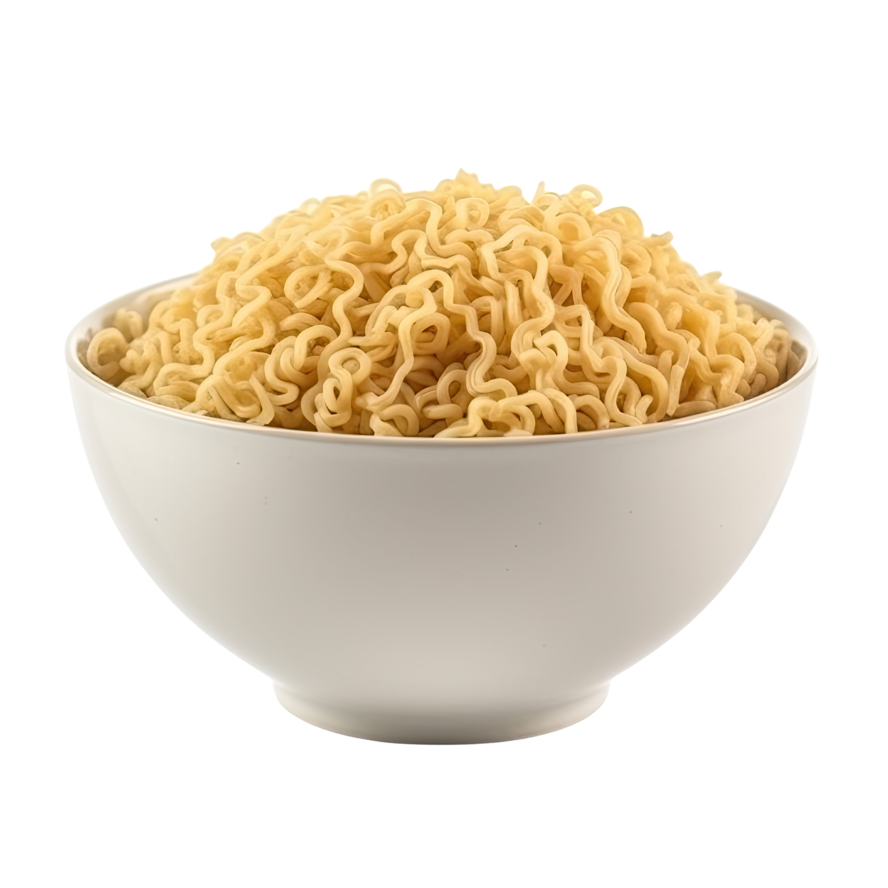

Types
A wide variety of ramen exists in Japan, with geographical and vendor-specific differences even in varieties that share the same name. Usually varieties of ramen are differentiated by the type of broth and tare used. There are five components to a bowl of ramen: tare, aroma oil, broth, noodles, and toppings.
Noodles
The type of noodles used in ramen are called chūkamen (中華麺, lit. 'Chinese noodles'), which are derived from traditional Chinese alkaline noodles known as jiǎnshuǐ miàn (鹼水麵). Most chūkamen are made from four basic ingredients: wheat flour, salt, water, and kansui [ja], derived from the Chinese jiǎnshuǐ (鹼水), a type of alkaline mineral water containing sodium carbonate and usually potassium carbonate, as well as sometimes a small amount of phosphoric acid. Ramen is not to be confused with different kinds of noodle such as soba, udon, or somen.
The jiǎnshuǐ is the distinguishing ingredient in jiǎnshuǐ miàn, and originated in Inner Mongolia, where some lakes contain large amounts of these minerals and whose water is said to be perfect for making these noodles. Making noodles with jiǎnshuǐ lends them a yellowish hue as well as a firm texture. But since there is no natural jiǎnshuǐ or kansui in Japan, it was difficult to make jiǎnshuǐ miàn or chūkamen before the Meiji Restoration (1868).
Ramen comes in various shapes and lengths. It may be thick, thin, or even ribbon-like, as well as straight or wrinkled.
Traditionally, ramen noodles were made by hand, but with growing popularity, many ramen restaurants prefer to use noodle-making machines to meet the increased demand and improve quality. Automatic ramen-making machines imitating manual production methods have been available since the mid-20th century produced by such Japanese manufacturers as Yamato MFG. and others.
Soup
Similar to Chinese soup bases, ramen soup is generally made from chicken or pork, though vegetable and fish stock is also used. This base stock is often combined with dashi stock components such as katsuobushi (skipjack tuna flakes), niboshi (dried baby sardines), saba bushi (mackerel flakes), shiitake, and kombu (kelp). Ramen stock is usually divided into two categories: chintan and paitan.
- Chintan (清湯; 'clear soup'), derived from the Chinese qīngtāng (清湯), is a clear stock, made by simmering ingredients and frequently skimming foam and scum off the top of the pot. Chintan stocks are the most common kind, and can be made from chicken, pork, vegetables and/or niboshi.
- Paitan (白湯; 'white soup'), derived from the Chinese baitang (白湯), is a broth with an opaque white colored appearance and a creamy consistency that rivals milk, melted butter or gravy (depending on the shop). Paitan stock is made by boiling pork or chicken bones at a high heat for hours at a time, allowing the bones to emulsify into the soup. The most well-known and common paitan stock is Tonkotsu (豚骨, 'pork bone'; not to be confused with tonkatsu). Although tonkotsu is merely a kind of broth, some people consider tonkotsu ramen (specialty of Kyushu, its birthplace) a distinct flavor category. When chicken bones are used to make a paitan stock, the resulting soup is called tori paitan (鶏白湯).

Tare
Tare sauce is a sauce that is used to flavor the broth. The main purpose of tare is to provide salt to the broth, but tare also usually adds other flavors, such as umami. There are three main kinds of tare.
- Shio (塩, 'salt') ramen is the oldest of the four types. This tare is made from cooking alcohols like mirin and sake, umami ingredients like kombu, niboshi and MSG, and salt. Occasionally pork bones are also used, but they are not boiled as long as they are for tonkotsu ramen, so the soup remains light and clear. In shio ramen, chāshū is sometimes swapped for lean chicken meatballs, and pickled plums and kamaboko (a slice of processed fish roll sometimes served as a frilly white circle with a pink or red spiral called narutomaki) are popular toppings as well. Noodle texture and thickness varies among shio ramen, but they are usually straight rather than curly. Hakodate ramen is a well-known version of shio ramen in Japan.
- Shōyu (醤油, 'soy sauce') tare is similar to shio tare, but with the addition of soy sauce, which boosts the salty and umami flavor even further. Shōyu ramen usually has curly noodles rather than straight ones, although this is not always the case. It is often adorned with marinated bamboo shoots or menma, scallions, ninjin ('carrot'), kamaboko ('fish cakes'), nori ('seaweed'), boiled eggs, bean sprouts or black pepper; occasionally the soup will also contain chili oil or Chinese spices, and some shops serve sliced beef instead of the usual chāshū.
- Miso (味噌) ramen reached national prominence around 1965. This uniquely Japanese ramen, which was developed in Sapporo Hokkaido, features a broth that combines copious miso and is blended with oily chicken or fish broth – and sometimes with tonkotsu or lard – to create a thick, nutty, slightly sweet and very hearty soup. Miso ramen broth tends to have a robust, tangy flavor, so it stands up to a variety of flavorful toppings: spicy bean paste or tōbanjan (豆瓣醤 [zh]), butter and corn, leeks, onions, bean sprouts, ground pork, cabbage, sesame seeds, white pepper, chilli and chopped garlic are common. The noodles are typically thick, curly, and slightly chewy.


Toppings
After basic preparation, ramen can be adorned with any number of toppings, including but not limited to:
- Chāshū (sliced barbecued or braised pork)
- Negi (green onion)
- Takana-zuke (Pickled and seasoned mustard leaves)
- Seasoned (usually salted) boiled egg (soy egg, ajitsuke tamago or ajitama)
- Bean or other sprouts
- Menma (lactate-fermented bamboo shoots)
- Kakuni (braised pork cubes or squares)
- Kikurage (wood ear mushroom)
- Nori (dried seaweed)
- Kamaboko (formed fish paste, often in a pink and white spiral called narutomaki)
- Squid
- Umeboshi (pickled plum)
- Corn
- Butter
- Wakame (a type of seaweed)
- Olive oil
- Sesame oil
- Mayu (black garlic oil)
- Other types of vegetables
Preference
Seasonings commonly added to ramen are white pepper, black pepper, butter, chili pepper, sesame seeds, and crushed garlic. Soup recipes and methods of preparation tend to be closely guarded secrets.
Most tonkotsu ramen restaurants offer a system known as kae-dama (替え玉), where customers who have finished their noodles can request a "refill" (for a few hundred yen more) to be put into their remaining soup.